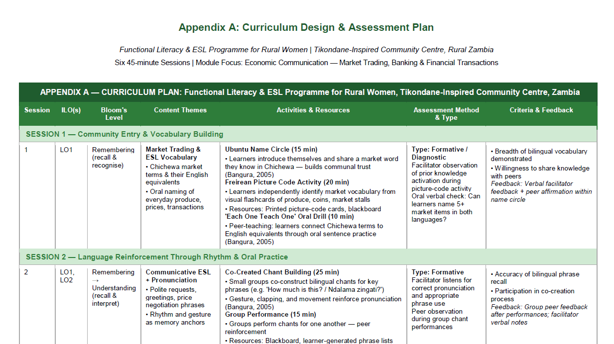
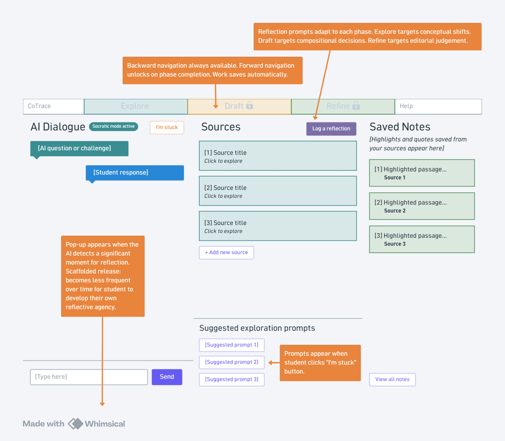

An instructional designer who brings eight years of education experience to AI-integrated learning.
I design learning around real people and real contexts: a new hire’s workflow, adult learners in a rural community, young learners online. Right now I’m focused on how AI can support learning without doing the thinking for the learner.

Selected work
Four projects that show how I design for different people and contexts.
CoTrace
A concept platform that makes human–AI collaboration visible in assessment, capturing the moments learners challenge, reject or rethink AI suggestions.
Read case study →
Facilitator Orientation Module
A four-unit online module, guided by an AI agent, that prepares tertiary facilitators to teach with CoTrace.
Read case study →
Adult literacy curriculum
A conceptual functional literacy and English programme for rural women in Zambia, built around andragogy, Ubuntu and translanguaging.
View the curriculum (PDF) ↗Daily Card: a co-designed job aid
A low-fidelity desk card co-designed with a new admin assistant who was learning her role with no formal onboarding.
Read case study →
See how I think as a designer
My multimodal journal is where I work through my design thinking in the open, through writing, video and visuals. It traces the questions, tensions and decisions behind projects like CoTrace, and how my practice has grown across my diploma.
I designed it as an LMS-style website and taught myself to build it with AI assistance.
Final ReflectionWhere I bring together the key ideas from the journal, what I’ve learned, and where I want to go next as a designer.My journey into learning design
Eight years in education, from university writing support to classrooms in Hanoi and online, taught me how learners actually respond to a lesson. That’s still the first thing I design for.
Let’s design something people will actually use.
Open to entry-level instructional design and learning design roles, remote or in Cape Town.
CoTrace: making human–AI collaboration visible
A concept platform that captures the moments students question, reject or rethink AI suggestions, and turns them into reflection that can be assessed.
Concept document, version 3 (2026)
Humanities undergraduates and their educators
Generativism, affordances and constraints, care ethics
Concept document, Explore screen wireframe, brand identity, facilitator orientation module
Generative AI could be a powerful thinking partner for students, but in most tertiary settings there’s very little structure around how it’s used. Without that structure, students tend to reach for AI’s most visible feature, generating text, rather than its most valuable one: questioning and pushing their thinking.
Asking students to explain their thinking after the fact doesn’t solve this. It adds admin for students and educators, and a reflection written at the end rarely captures what actually happened along the way.
CoTrace documents decisions, revisions and turning points as they happen. When a student changes direction, challenges an AI suggestion or rethinks an argument, CoTrace prompts them to explain what happened and why, gradually helping them notice these moments on their own.
It isn’t a surveillance tool, and it doesn’t claim to guarantee academic integrity. It’s designed to create better conditions for genuine engagement than unstructured AI use, and to make the process visible enough to assess.
Each section of an assignment moves through three phases
Explore
AI as a Socratic opponent
- The AI questions, pushes back and surfaces productive tension
- Three-panel workspace: AI dialogue, sources and saved notes
- Confusion detection plus an “I’m stuck” button for guided source exploration
Draft
The student’s own writing comes first
- The student writes their own section from what they explored
- A deliberately narrower AI panel signals that the AI doesn’t lead here
- The AI stays available for questions only
Refine
Supportive mode, never rewriting
- The AI flags areas to look at and asks guiding questions
- Checks for academic tone, cohesion and referencing, each a question rather than a correction
- Every improvement is made by the student
Three signals mark a significant learning moment
When a signal is detected, a reflection popup asks a question matched to the phase: conceptual shifts in Explore, compositional decisions in Draft, editorial judgement in Refine. Students can also log a reflection at any time. Early on the AI does the noticing; over time, students learn to notice for themselves.
A persistent navigation bar shows the three phases. Students can always move back, and work saves automatically, but forward movement is gated: Draft unlocks after Explore, and Refine unlocks after Draft is submitted.
Each section ends with a summary of signals, reflections and sources, where every number links to the moments behind it. At submission, a timestamped, non-editable reflection document sits beside the editable final draft, and both go to the marker together.
See how the three phases come together on screen
This is the Explore screen, where students work with AI as a Socratic opponent. The annotations show the design decisions behind it.

Every feature is a deliberate design constraint
CoTrace doesn’t change what AI can do. It changes the context students meet AI in, making the learning uses easy to reach and passive consumption harder to reach.
Affordances and constraints
Day and Lloyd (2007)
AI’s potential for critical thinking isn’t enough on its own; structure and guidance are what turn that potential into learning. CoTrace is a constraint architecture: the phase cycle, gated navigation and required reflections all steer students towards AI as a thinking partner.
Generativism
Pratschke (2024); EDGIM; AIAS levels 3–4 (Perkins et al., 2024)
Learning with AI means actively generating meaning rather than consuming output. The repeating three-phase cycle puts students in the role of directing AI, not receiving from it.
Metacognitive agency
Roe and Perkins (2024); Bearman et al. (2024)
Real agency depends on students noticing their own thinking. Phase-specific reflection questions build that awareness, and the timestamped reflection record supports evaluative judgement through repeated cycles.
Care ethics
Olesova, Yu and Garcia de Hurtado (2025); Noddings
Good support preserves the learner’s own capability. That’s why the Refine AI asks rather than corrects, and why support is gradually withdrawn as students grow more capable.
Multimodality
Kress; Mayer’s multimedia principle (future direction)
Content comes as text and audio, and students can type or speak their reflections, since spoken reflection is often faster and more candid. Visual argument maps are a possible next step, not yet a commitment.
What it doesn’t claim
Corbin et al. (2025)
AI and assessment is a wicked problem. CoTrace can’t guarantee genuine engagement. It aims for something smaller and more defensible: better conditions for it, and a process visible enough to assess.
Testing the pedagogy before building the platform
Who
Second- or third-year humanities undergraduates: grounded enough to describe their experience, with enough of their degree left to benefit from the scaffold.
How
Each participant completes one assignment section through a manually facilitated simulation of the three-phase cycle, using existing AI tools. A D2L Brightspace sandbox stands in for CoTrace features, and sessions are observed in real time.
What success looks like
- Questioning AI output without being prompted
- Explaining rejected or changed AI suggestions unasked
- Spotting moments of tension or divergence independently
Observation is weighted above the follow-up survey.
Facilitator Orientation Module: preparing educators to teach with CoTrace
→Facilitator Orientation Module: preparing educators to teach with CoTrace
An online orientation module for tertiary facilitators taking on a new role with CoTrace. Its AI guide models the same behaviour facilitators will need to use with their students.
Tertiary facilitators adopting CoTrace
Four-unit online module with an AI pedagogical agent
Aligned outcomes, UDL, multimedia learning
Design proposal, learner personas, storyboard and 16-screen wireframe
Many institutions value generative, process-focused learning but lack the infrastructure to support it (Corbin et al., 2025). CoTrace provides that infrastructure, and it also creates a new role: the CoTrace Learning Facilitator.
That role asks educators to make a big shift, from content provider to what Vendrell and Johnston (2026) call a “cognitive orchestrator.” Facilitators need to know how to use the platform, and also why it works the way it does, so they can apply its logic consistently with real students.
Facilitators learn CoTrace by experiencing it the way their students will.
An AI pedagogical agent guides facilitators through the module, narrating early on and stepping back as they gain confidence. It models the exact behaviour facilitators will need to reproduce: guiding with questions instead of giving answers.
Four units, each with an activity and an assessment
Navigating the platform
Activity: interactive guided walkthrough, narrated by the agent
Assessment: platform navigation task
From correcting to guiding
Activity: paired transcript comparison with demo videos
Assessment: mock student response task
Evaluating the process
Activity: rubric co-construction in discussion
Assessment: holistic portfolio evaluation
Designing for productive friction
Activity: think-aloud modelling video
Assessment: task design worksheet and reflective commentary
Choosing the mode and the feedback to fit the task
Modes chosen for what they carry
- Unit 2 uses short videos instead of text transcripts alone, because tone and delivery are central to the difference between correcting and guiding.
- Unit 3 colour-codes sample portfolios by depth of engagement, giving facilitators a visual anchor before they put “depth” into words.
- In Unit 4, facilitators choose to reflect in writing, audio or video.
A feedback model matched to the task
- Procedural tasks (Unit 1) get automated feedback.
- Judgement tasks (Unit 2) get an AI first-pass check against the rubric, followed by a fuller human comment.
- Process evaluation (Unit 3) gets qualitative feedback from a human reviewer, with no raw percentage mark.
- Personal and identity-related reflection (Unit 4) is reviewed by a human only.
Selected screens


Daily Card: a co-designed job aid
→Daily Card: a co-designed job aid for a new admin assistant
A low-fidelity desk card that brings a new hire’s workflow and a tricky decision process into one familiar, paper-based tool, shaped with her at every step.
Project manager in a team of three
Co-design with a WhatsApp probe kit and two feedback rounds
Merrill’s First Principles, SAM, care ethics
Double-sided A4 desk card (low fidelity)
A new sales and admin assistant joined a natural stone wholesaler in Cape Town with no formal onboarding. There was no manual or training plan. She learned by watching a senior colleague as things came up.
She had built her own coping system from sticky notes, loose handwritten lists and a “brain dump” planning sheet. But every knowledge gap turned into a dependency. She had to ask a busy manager for discount rules, stock information and incoming order details, which slowed down her replies to clients.
She was a working adult with little time for formal interviews, so we used an asynchronous WhatsApp probe kit over four days. She shared photos, voice notes and messages whenever something felt relevant, in her own space and on her own schedule.
The first round of prompts asked about her everyday workday. The second asked her to look back on her onboarding, for example: if a magic button could instantly explain one part of your job, what would it explain?
We mapped the power dynamics carefully. Senior management were consulted only for content knowledge, such as how the discount system works. She kept authority over the design decisions, and we were open with her about who we had consulted.
She already had a system. It just had nothing solid behind it.
Instead of replacing her sticky notes and brain dump sheet, the job aid would extend them by bringing what she was already tracking into one familiar, low-stakes paper tool she could rely on without asking first.
The Daily Card is a double-sided A4 card that sits on her desk. Side A is a daily workflow sheet with two zones: incoming orders and stock allocation. Side B is the microlearning piece, a step-by-step discount guide for quoting damaged stone slabs. It starts by teaching her to tell structural damage from cosmetic damage, then walks her through the decision, and ends with a clear checklist for when to escalate.
We used Merrill’s First Principles to shape what the card teaches, from real-world tasks to applying the rules independently, and SAM to keep iterating quickly with her. The blank percentage fields on the discount guide are filled in once with her manager, so the rules become hers to apply.
We shared Version 1 as a PDF in the same WhatsApp group and asked open questions: what works, what feels confusing, what you wouldn’t realistically use. Her response was enthusiastic, and she was also very specific about what didn’t match how she actually works.
What changed in Version 2
- Zone 1 columns reordered to match her workflow, with material and block number split and a new slab column
- Delivery date removed, since the card is printed daily
- Zone 2 rebuilt from her own rough sketch, with a dedicated layout for tombstone orders we hadn’t anticipated
- More intentional colour-coding, because she said the colour helped
What stayed the same
- The step-by-step structure of the discount guide, which she said worked well for her
- Severely damaged slabs were added to the escalation checklist rather than given a new step, since they always need a manager
The project led the company to create a formal SOP for the role.
Co-designing the card made the missing onboarding visible. After I raised it with management, the company created a standard operating procedure for the role, so the next person won’t have to piece it together alone.
I managed our team of three throughout the project, coordinating the plan, the division of work and the timeline across the co-design sessions, prototyping and iteration.
We expected the problem to be about access to information. Through co-design we saw how much of it was about confidence: she needed to feel allowed to act without checking with management first. That changed the tone and framing of the card, even though the format stayed similar.
I also came away questioning our own solution. A well-designed job aid can quietly let an organisation off the hook for the onboarding it never provided. Naming that tension openly with management is what led to the SOP, which taught me that part of a learning designer’s job is pointing at the gap behind the request.